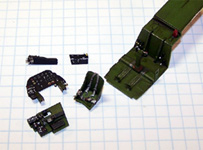

In the Autumn of 1937 the USAAC ordered an attack-bomber aircraft with two engines and the ability to carry 1200 pounds of bombs with the speed of 200 mph. The initial design, the brainchild of Donald Douglas, Sr., Ed Heinemann and Jack Northrop involved two different, interchangeable noses � a glass one for the bomber version and a solid nose with 4 machine guns for a ground attack version.
The first prototype - Model 7B, flew on October 26th, 1938. The 7B created an international furor when, during a demonstration flight carrying an unauthorized passenger in the form of the French Purchasing Commissioner, the aircraft crashed. Still, the French were very impressed with the aircraft and in 1939 France ordered 100 examples of Model 7B, but with a few modifications: additional armor, different engines, increased bomb load and French instruments in cockpits. This aircraft was designated DB-7.
France ordered 170 DB-7s and another 100 of DB-7As with R-2600-A5B engines. The aircraft was also ordered by Great Britain (DB-7B) designated �Boston�, by Holland and Belgium. Only sixty A-20's of the 270 units ordered ever reached France before the German attack in May 1940. The American A-20 was similar to DB-7B, however, this version was not very successful and a modified A-20A flew on 30 November 1940. It was the combat experience gained by the British that was in many ways to turn the A-20 in its subsequent versions into the fast, heavily armed attack ship we know. On July 4, 1942, six A-20s flown by American crews of the 15th Bombardment Squadron accompanied six flown by British crews on a low-altitude mission against four Dutch airfields, the first U.S. daylight bombing raid in Europe.
The A-20 is probably best known through its service with Kenney's Fifth Air Force and the campaigns in New Guinea. It is there that they were converted into strafers by adding extra 50 cal. machine guns to the nose of C models where they created havoc with Japanese shipping and troops. It is also these aircraft that successfully used the tactics of skip-bombing to sink thousands of tons of Japan's merchant marine.
The A-20G, the first production model since the A-20C, was the version built in the largest numbers -- 2,850 aircraft in all and were built in the Santa Monica, California factory. The -G model was designed primarily as a ground attack aircraft. A solid nose that featured four fixed 20 mm cannons replaced the greenhouse glass nose of the earlier models. The barrels of these cannons stuck out about three feet and gave the aircraft a distinctive appearance. Also this production series introduced the Martin dorsal turret with two 12.7 mm machine guns. During acceptance and combat capability testing, the cannons had a tendency to jam during sustained firing. Also, the cannon had a relatively slow rate of fire. These two factors led to the redesign of the forwarding firing armament and only the initial block -- A-20G-1 -- of 250 aircraft were completed with the 20 mm cannons. Beginning with block 5, the A-20G had six .50-cal. machine guns in the nose. Most of the A-20G-1's were eventually transferred to the Soviet Air Force under the Lend-Lease agreement where they were used successfully in the ground attack role.
The versatile A-20 was used in the Pacific, Middle East, North African, Russian, and European theaters. Some A-20s equipped with radar equipment and additional nose guns were redesignated as P-70s and were used as night fighters until replaced in 1944 by the P-61 "Black Widow� with its increased high altitude performance. A-20 production halted in September 1944 but operational units continued to see action through the end of the war in 1945 while being upgraded to the A-26.
The Kit
 This kit was the first and, I believe only, decent A-20G injection molded model ever made in 1/48 scale and had been out of production for nearly ten years. Much to my delight it just recently has been reissued by Italeri with new decals. Upon opening the box the modeler is presented with two bags of parts molded in a very light gray, nearly white plastic. The single sprue of clear parts is separate from the gray parts and there is a single small sheet of decals, a large sheet of assembly instructions and a single fold-out sheet of aircraft history and painting/marking instructions.
This kit was the first and, I believe only, decent A-20G injection molded model ever made in 1/48 scale and had been out of production for nearly ten years. Much to my delight it just recently has been reissued by Italeri with new decals. Upon opening the box the modeler is presented with two bags of parts molded in a very light gray, nearly white plastic. The single sprue of clear parts is separate from the gray parts and there is a single small sheet of decals, a large sheet of assembly instructions and a single fold-out sheet of aircraft history and painting/marking instructions.
There are eight sprues of parts with the two main fuselage pieces as individual pieces. Most of the sprues are fairly free of flash with the exception of one tree of wing panels that has a lot of fine flash on it. It�s nothing that will interfere with the parts or cause any concern during clean up. All of the parts display finely recessed panel lines, so fine that they may disappear with sanding. The clear parts appear to be of good quality and good clarity. Overall there are 9 clear parts and 104 gray parts giving us a total of 113 pieces in the box.
Under close examination several items require further mention; first is the bomb bay. While the cockpit has very nice detail and lots of construction direction the bomb bay is the exact opposite � it lacks any good detail and while the doors are designed to be open should you want to close them (probably a good idea) you will need to add some plastic strips inside the fuselage to give them something to attach to. The doors are slightly small and will float inside the openings. And about that cockpit, we are given a cockpit of very nice detail for sidewalls and flight controls but should the modeler want to open the hatch there is a very glaring omission � the very visible lift raft that rests on the shelf behind the pilot is not there! I wonder how AMT could have missed a detail like this when they obviously spent so much time producing a quality kit. The main fuselage pieces have a little bit of warpage to them which is most likely caused by a combination of a large part with a lot of open areas for structural details. It�s nothing serious that will not be pulled out during the assembly process.
The main wheels show some highly exaggerated fish scale treads that will have to be sanded off or simply replaced. AMT does give you a selection of early (long) and late (short) model gun barrels so that rates as another good point for the kit.
Decals and instructions
The kit decals include markings for two aircraft; �Little Joe� from the South East Pacific Theater and �Little Isadora� from the South West Pacific Theater. Both of these schemes are your basic Olive Drab over Neutral Gray, which is the most common paint scheme for an A-20. The decals are slightly off registry and the color density is doubtful. In examining the sheet in at least two places on the blue background of the stars I can see right through to the sheet backing and it is an ink problem, not shipping damage. I think I would have to go for some aftermarket decals for the model.
The instructions for this kit are very nice. You get a large, three-fold sheet that includes nineteen individual construction steps. The first step is devote to the cockpit and actually breaks down into four subsets. There is a second sheet, which includes a brief history of the aircraft, painting and decal placement instructions, and some basic modeling tips.
Conclusions
I�m really not trying to be critical of this kit, it�s really very nice. It�s just that with so much obvious work to make it nice, the errors are glaring. This kit does a wonderful job of capturing the slender fuselage profile of the Havoc and now that Italeri has reissued the kit everyone has an opportunity to acquire one. There are a variety of aftermarket goodies still available for this kit; True Details makes a set of wheels for the A-20 that includes the lift raft and Eduard makes detail sets for both the interior and the undercarriage. There is a Squadron vacuform canopy available and replacement decals from both Aero Master and Three Guys who is now AM Tech (hmmmm). Overall, I give this kit a good to very good recommendation � pick one up you won�t be disappointed.
8/20/06
Construction
The thought of building this kit has been knocking around the back corners of my brain for several months now. In anticipation of this I have acquired both Eduard photo etched packages; the A-20G cockpit package and the more general A-20 exterior set that actually covers the interiors of the main landing gear bays. I also picked up the True Details wheels and life Raft set along with the Squadron clear vac canopy set. As if this was not enough I also ordered a set of Vector engines to replace the kit engines. Once I had all this cool aftermarket stuff kicking around it seemed like it would be almost criminal to use the kit decals. I first went to AM Tech and picked up one the Three Guys Replica decal sets for the A-20. AM Tech had purchased all the decal rights from Three Guys Replicas and started reissuing those sets. Of course once I had those Pyn-Up decals came out with a set for the A-20 also and as they say, �in for a penny, in for a pound� and I bought one of those sheets as well. Now I have enough decals for an entire squadron of A-20s.
Now that everything is here it was just a matter of time to allow a clear spot to open on the workbench. I usually have four or five projects going at any given time and during the materials build-up for this project there was a full compliment of five going. I had to be strong and not open anything new until something cleared. Last weekend I managed to clear three projects from the bench (woo-hoo) and this was one of the first things out of the box.
After a careful study of the kit instructions and both sets of Eduard instructions I was about ready to dig in. I also took a day to review the various decals and settled on one from the Pyn-Up sheets as my objective � we�ll keep which one under the hat for the moment. Starting with the cockpit the Eduard set requires that the dash and the left side panel get completely replaced while the floor pan and right side panel take some major surgery. When I removed the original kit plastic from the areas indicated by the Eduard plans I found I had several large holes in the side panel and floor that had to be filled. The floor was fairly easy with some Squadron White Putty being used but the side panel required some scrap plastic sheet be cut to fit a rather large opening then be finished with putty before any PE stuff could be added. Once these fixes were taken care of the new panel boxes were bent to shape using an Etch Mate (this is a great tool if you�re doing a lot of PE stuff) and superglued in place.  The new throttle quadrant and gear/flap panel for the right side was also assembled. The dash and supports were put together then that piece was painted black. All other interior pieces were given a base coat of interior green then detailed with black and some assorted colored enamels for switches and buttons. Seat belts were done and added to the kit seat. You can click on those images at right to view larger pictures. The interior of a few instrument bezels were touched with red and yellow to give them some highlights and the acetate instruments had the backsides painted white. To attach the acetate to the pe bezel I first coated the acetate with a good layer of Future floor polish then, while still wet, placed the pe part. With some gentle pressure applied the Future welled up a little into the openings and created the look of glass covers. As the Future dried it bonded the two pieces together. Some interior areas were dry brushed with silver and the entire interior with the exception of the instrument panel got a coat of sludge wash.
While the cockpit assembly dried I airbrushed the fuselage interior with interior green and assembled the aft gun turret. When test fitting the turret I found the fit was so tight I could not even close the fuselage much less move the turret. I sanded the mounting ring slightly then used a cut-off wheel on my Dremel to open the mounting slot on the fuselage a little. After several test fittings and a couple rounds of sanding I had an acceptable fit here. Not the cockpit is installed along with the main wing spare and the fuselage is closed trapping the gun turret in place. I had already decided that I was going to build this with the bomb bay closed so did not bother installing the rack of bombs. There was a fair amount of warpage to the fuselage so pulling that out and gluing the fuselage took about an hour. The G style nose halves were glued in place and several lead fishing sinkers were superglued into the nose to counter balance the tail. I followed the instructions for this part of the assembly and regret it, I should have glued these nose halves to the fuselage halves prior to assembly, following the instructions made me end up with a nasty little step at this joining that will require filler, sanding and scribing (yippee).
A day goes by and construction continues. The wings are assembled and slid over the wing spares, here I found one wing to be too narrow so installed a piece of scrap plastic as a spreader bar to open it up a little, the other wing went together without a hitch. Even with this adjustment a slight amount of filler will be needed. The tail pieces were then assembled and attached � more filler needed here. In the image below and right several lettered arrows indicate the places where filler was needed. Also not shown is a line of filler along the ventral seam. I used Mr. Surfacer 500 as my filler on this kit applied with a toothpick. The model is allowed to set for another day while everything dries down.


{kind=link}
{kind=link}
{kind=link}
{kind=link}
{kind=link}
{kind=link}
{kind=link}
{kind=link}
{kind=link}
{kind=link}
{kind=link}
{kind=link}
{kind=link}
{kind=link}
{kind=link}
{kind=link}
{kind=link}